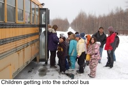
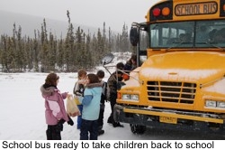
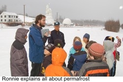
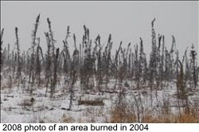
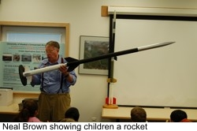
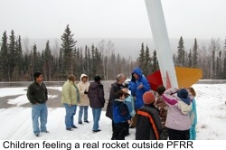

|
Joy Elementary Field Trip
The Joy team went for a field trip to learn about permafrost and forest fires. The fieldtrip gave the children a unique scope to link what they have read and learned about permafrost and forest fires and observe those in person. 

Permafrost
Permafrost experts accompanied them and they explained the children about the present day permafrost conditions in Alaska. The children were introduced to the permafrost associated landform features, the climate-sensitive aspects of permafrost and its impact on us. Children also learned about what precautions had been taken for laying the great Alaskan oil pipeline over the permafrost terrain.Forest fires
The team went to the Poker Flat Research Range (PFRR) to see the effects of a forest fire that took place in 2004. The fire strongly burned the surface soil and vegetation. The team observed the very slow recovery of vegetation over the burned areas. The children also learned about what causes forest fire, and what are the disadvantages and advantages of having forest fire. They were also told about how present day forest fire monitoring systems works.Visiting the Poker Flat was also a bonus for the children as they had the scope to learn about the research activities being conducted at the Poker Flat. Dr. Neal Brown, director of the Alaska Space Grant Program explained to the children about the ongoing research on the Auroras at the Poker Flat. 

|
| |
|